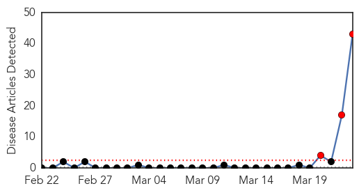
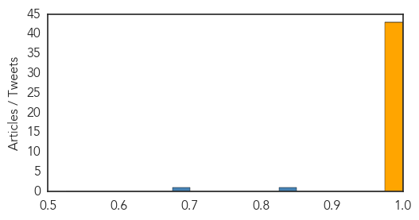

Ebola
30-Day Web Trend
3 alerts, 0 warnings

30-Day Twitter Trend
Article Locations
Article Confidences
Top Articles:
- 1.000
- Ebola detected in Guinea victims, 50 dead
- 1.000
- Ebola Outbreak In Guinea; Doctors Without Borders Offers Aid
- 1.000
- Ebola Outbreak In Guinea, At Least 59 Dead
- 1.000
- Emergency Ebola Intervention Launched in Guinea
- 1.000
- 59 DEAD OUT OF 80 CASES IN GUINEA AS TEST RESULTS SHOWED POSITIVE RESULTS OF THE EBOLA VIRUS
- 1.000
- Ebola in Guinea threatens three-nation spread as Unicef responds
- 1.000
- Ebola virus kills more than 50 in Guinea
- 1.000
- Ebola outbreak that has killed up to 59 confirmed in Guinea
- 1.000
- Ebola virus strikes Guinea leaving 50 dead
- 1.000
- Ebola outbreak death toll rises to 60
- 1.000
- Ebola detected in Guinea victims, 50 dead
- 1.000
- Ebola Outbreak In West Africa Kills 59 So Far, Authorities Struggle To Contain 'Highly Contagious' Virus
- 1.000
- First Recorded Cases of Ebola in Guinea
- 1.000
- Ebola detected in Guinea victims, 50 dead
- 1.000
- Ebola detected in Guinea victims, 50 dead
- 1.000
- Ebola detected in Guinea victims, 50 dead
- 1.000
- At least 59 people dead in Guinea Ebola outbreak
- 1.000
- OUTBREAK! At least 59 people dead from ebola in Guinea
- 1.000
- Ebola outbreak: health officials work to prevent spread of deadly virus in Guinea
- 1.000
- The Voice of Russia: News, Breaking news, Politics, Economics, Business, Russia, International current events, Expert opinion, podcasts, Video
- 1.000
- Guinea confirms fever is Ebola, has killed up to 59
- 1.000
- The Ebola Virus Just Killed 60 People in West Africa, But Don't Panic
- 1.000
- Viral Hemorrhagic Fever Erupts in Guinea Caused by the Ebola Virus
- 1.000
- Guinea Ebola Outbreak Confirmed
- 1.000
- Ebola Outbreak Hits West African Nation
- 0.999
- Ebola Outbreak In Guinea Kills At Least 59 People
- 0.999
- Guinea Confirms Fever is Ebola, Has Killed up to 59
- 0.999
- Kenya : Guinea confirms fever is Ebola, has killed up to 59
- 0.999
- Ebola Kills 59 In Guinea, With More Cases Expected In Neighboring Countries
- 0.999
- Ebola Outbreak Cripples West Africa; 59 Reported Dead in Guinea
- 0.999
- Will Ebola Spread To US? At Least 59 People Dead From Viral Hemorrhagic Fever In Guinea
- 0.999
- Ebola outbreak kills nearly 60 in Guinea
- 0.999
- Guinea deaths: Ebola blamed for deadly fever outbreak - News
- 0.999
- Guinea haemorrhagic fever may have crossed into Sierra Leone
- 0.999
- Ebola alert grips Guinea and Sierra Leone
- 0.999
- News from The Associated Press
- 0.998
- Ebola detected in Guinea victims, 50 dead
- 0.998
- Ebola Blamed For Deadly Fever Outbreak
- 0.997
- Guinea confirms fever is Ebola, has killed up to 59
- 0.997
- Guinea Ebola outbreak kills 59, spreads to capital
- 0.992
- Guinea confirms deadly mystery epidemic as Ebola
- 0.989
- Angry mob attacks Ebola treatment centre in Guinea
- 0.977
- Africans in grim battle with virus
Top Tweets:
- 0.827
- RT: At least 60 deaths so far from Ebola in Guinea poss. 30 more in Sierra Leone. Details unfolding on alert http:/…
- 0.689
- Guinea deaths: Ebola blamed for deadly fever outbreak http://t.co/C66lWnAK33